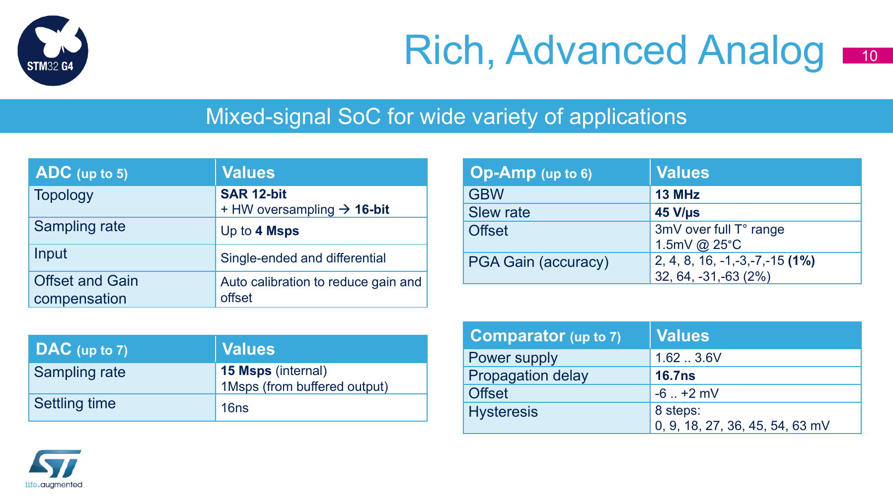
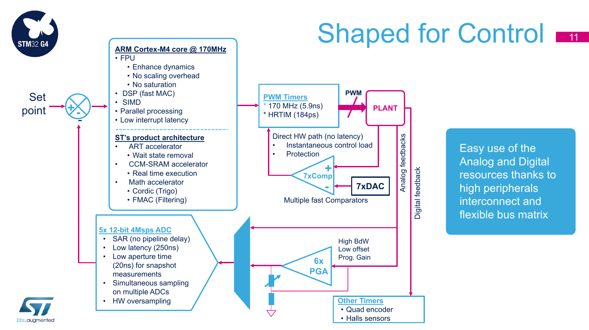
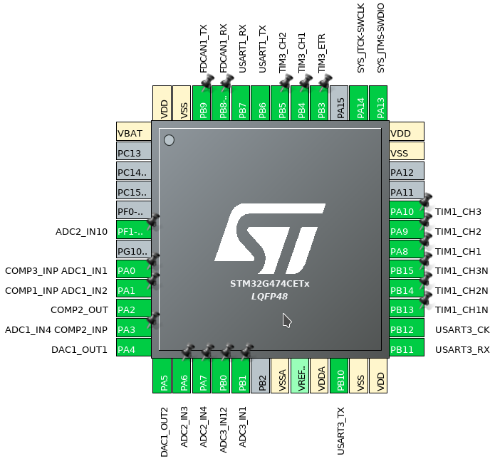

Als Teil der Entwicklung der zweiten Version des Micro-Motors findet nun die Auswahl des Microcontrollers statt. Außerdem geht es in diesem Blogpost um Komparatoren und die Stromversorgung.
Die bisherige Entwicklung des Motorcontrollers kann in mehreren älteren Blogposts nachgelesen werden.
Die vorläufige Auswahl der Shuntverstärker ist fast abgeschlossen, siehe Teil 2. Ebenso ist der Gatetreiber (DRV832x) gesetzt in der Version ohne Strommessverstärker und mit SPI-Interface (DRV8320S oder DRV8350S in Gehäuse WQFN32, 5x5mm²). Also MOSFET soll der in Micro-Motor Version 1 bewährte N-Channel Dual-FET FDMD8260L (60V, 5.8mΩ) verwendet werden.
Als nächste wichtige Komponente wird der Microcontroller ausgewählt.
Microcontroller
Eher zufällig wurden wir auf die neue Microcontroller-Serie STM32G4 von ST Microelectronics aufmerksam. In Teil 1 wurde der STM32L432CC als präferierter Microcontroller genannt, jedoch bietet die neue STM32G4-Serie, speziell der STM32G474 (oder STM32G473, ohne High-Resolution-Timer) einige Vorteile:
- Taktfreqenz bis zu 170MHz für Cortex-M4F und alle Peripherals (max. 80MHz bei STM32L4)
- High-Performance Analog Peripherals
- 7x Komparator (COMP), 17ns Propagation delay, einstellbare Hysterese
- 5x ADC 12bit, 4MSPS, differenzielle Inputs verfügbar)
- 4x DAC 12bit, 1MSPS
- 6x Opamp mit GBP (Gain Bandwidth Product) von 13MHz (OPAMP)
- DSP (Rechenbeschleuniger) Funktionen für Trigonometrie und Filter (CORDIC, FMAC)
- High-Resolution-Timer (HRTIM) mit 184ps Zeitauslösung
- 3x Advanced Motor Control Timer (TIM1, TIM8, TIM20)
Die folgenden Bilder zeigen die für den Micro-Motor relevanten Features der STM32G4-Serie und stammen aus STs Präsentation “STM32G4 Mainstream MCUs Product Overview”.


Stand 2019/08 sind nur einige wenige Chips aus der STM32G4-Serie verfügbar, für den Micro-Motor kommen STM32G474CET6 und STM32G473CET6 im LQFP48 Gehäuse in Frage. Im vom STM32L433CCU bekannten Gehäuse UFQFPN48 stehen noch keine Chips zu Verfügung. Das Gehäuse LQFP48 benötigt zwar mehr Platinenoberfläche als der UFQFPN48, allerdings sind bei letztem Gehäuse durch das Exposed Pad keine Durchkontaktierungen und Leiterbahnen unterhalb des Chips möglich, was den Platzvorteil unter Umständen aufwiegt.

Erfreulicherweise können die ADC- und Komparator-Eingänge zeitgleich genutzt werden, sodass hier keine unnötigen Pins verschwendet werden müssen.
Komparator
Da der Komparator im Microcontroller integriert ist, werden keine dedizierten Komparatoren benötigt. Das spart viel Platz und reduziert die Komplexität des Platinenlayouts.
Systemüberblick
Durch die geänderte Auswahl des Microcontrollers ändert sich das Blockschaltbild geringfügig.

Stromversorgung
Die Logik, bzw. alle Komponenten außer den MOSFET-Halb-Brücken und dem Motor, werden über eine separate Spannungsschiene im Roboter mit 6V bis 7V versorgt. Aus diesen 6V bis 7V müssen lokal 3.3V für den Microcontroller und weitere Elektronik, sowie 5V für Hall-Sensoren und Encoder erzeugt werden. Die Logik-Versorgungsspannung bleibt im Gegensatz zu Versorgungsspannung für den Motor bei einem Not-Aus bestehen.
Um alle Komponenten auch ungünstigsten Situationen stabil mit Strom zu versorgen sind sowohl für 3.3V als auch für 5V Spannungsregler mit eine Ausgangsstrom von mindestens 200mA nötig. Beispielsweise der CAN-Transceiver TCAN332 kann bei einem Bus Fault bis zu 180mA benötigen, auch in diesem Fall muss der Betrieb des Micro-Motors aufrecht erhalten werden.
Der Gatetreiber DRV832x/DRV835x ist mit dem Suffix R erhaltlich, wo ein Schaltregler galvanisch getrennt ins das Gehäuse integriert ist. Beim DRV832x handelt es sich um den Buck-Regulator LMR16006X, welcher bei Eingangsspannugen zwischen 4V und 60V ein Spannung zwischen 0,8V bis 60V bei 600mA bereitstellen kann. Der in den DRV835x integrierte Buck-Regler LM5008A liefert 2.5V bis 75V bei 350mA bei Eingangsspannugen zwischen 6V und 95V. Statt im WQFN32 (5x5mm²) Gehäuse kommt der Gatetreiber dann im WQFN40 (6x6mm²) Gehäuse, benötigt also 11mm² mehr Platinenfläche zuzüglich der externen Spule, Kondensatoren und Widerständen.
Das hochintegrierte Schaltwandler-Modul TPS82150 hat eine integrierte Spule und benötigt im μSiL8 Gehäuse lediglich 8.4mm² Platinenfläche. Zudem kann ein besseres Platinenlayout durch die flexible Platzierung ermöglicht werden.
Für die Versorgung der empfindlichen analogen Elektronik könnte ein dedizierter LDO-Wandler hinter dem 5V Schaltwandler eingesetzt werden, fall ein LC-Filter eine ausreichend rauschfreie Spannungsversorgung ermöglicht.
Rekuperation
Mit Hilfe von Rekuperation kann sowohl die Wärmeentwicklung im Micro-Motor, als auch die Batterie-Laufzeit des gesamten Roboters verbessert werden. Eine Begrenzung der Rekuperationsleistung im Micro-Motor ist nicht vorgesehen, da dies zentral im BMS besser lösbar ist.
Überspannungsschutz
TVS-Dioden an dem Logik- und Motor-Versorgungsspannungen müssen so ausgelegt werden, dass die auf Micro-Motor vorhandenen Spannungsregler bzw. andere direkt verbundenen Bauteile nicht beschädigt werden können. Um Rekuperation mit hoher Effizienz zu ermöglichen sollte die Clamping Voltage so hoch wie möglich gewählt werden.